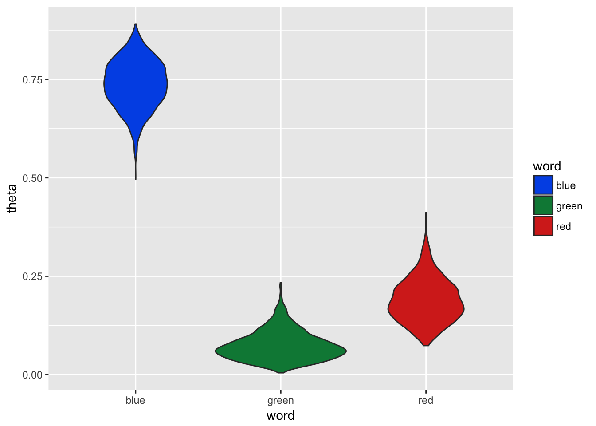

3 Multinomial Distribution
3.1 Comparison of Dice vs. Words
The binomial distribution is a special case of the multinomial distribution where the number of possible outcomes is 2. A multinomial distribution can have 2 or more outcomes and therefore is normally shown through examples using a 6-sided die. Instead of using a die with numbers on each side, let’s label the sides with the following words:
“Latent†“Dirichlet†“Allocation†“has†“many†“peicesâ€
—————image placeholder———————– Maybe draw a die with those words on it and consider it a ‘document’ ——————-placeholder end——————–
In the example above we would assume it is a fair die which would result in equal probabilities of ‘rolling’ any of the 6 unique words. Therefore each word has 1/6 chances of being randomly sampled from the die.
Below is an empirical example where we take each word and assign it to a single side of a fair die. The experiment, a single roll of the die, is repeated 10,000 times. We can see each word comes up at roughly the same frequency.
# draw 1000 samples from multinomial distribution
outcomes <- replicate(10000, which(rmultinom(1,1,rep(1/6,6))==1))
words <- unlist(strsplit("Latent Dirichlet Allocation has many peices", ' '))
ds <- data.frame(id = outcomes, word = sapply(outcomes, function(x)words[x]))
ggplot(ds, aes(x= word)) + geom_histogram(stat='count',color='#1A384A', fill='#7A99AC') +
scale_x_discrete(labels = words) +
theme_minimal()Figure 3.1: Sampling from Multinomial with Equal Parameters
Side Note:
Let's think of how this will be used in the case of LDA. If I wanted to generate a document based on a model, I could use a multinomial distribution to determine what words would be in the document. If I knew the probability of a word I could use the example above to draw a new word with each sample. Obviously some words occur much more often than others, so the 'fair die' example wouldn't work for generation of document. In later sections we will build on this concept, but its a good idea to start thinking about how this extends to language.As stated before, the binomial distribution is a special case of the multinomial distribution. The probability mass function for the multinomial distribution is shown in (3.1):
\[ \begin{equation} f(x)=\dfrac{n!}{x_1!x_2!\cdots x_k!}\theta_1^{x_1} \theta_2^{x_2} \cdots \theta_k^{x_k} \tag{3.1} \end{equation} \]
- k - number of sides on the die
- n - number of times the die will be rolled
Therefore the multinomial representation of the distributions we’ve already discussed, binomial and bernoulli, would use the following parameters:
- k sided die rolled n times
- n = 1, k = 2 is bernoulli distribution
- n > 1 , k = 2 is binomial distribution
3.2 Relationship to Bernoulli
Time to connect the dots between Bernoulli and Multinomial distributions . Recall the bernoulli probability mass function shown in Equation (3.2).
\[ \begin{equation} f_{x}(x)=P(X=x)=\theta^{x}(1-\theta)^{1-x}, \hspace{1cm} x = \{0,1\} \tag{3.2} \end{equation} \] Let’s swap in some different terms. We can replace the first term, \(\theta\), with \(\theta_{1}\) and the second term, \((1-\theta)\) as \(\theta_{2}\). Then we have:
\[ \begin{equation} {\theta_{1}}^{x_{1}}{\theta_{2}}^{x_{2}} \tag{3.3} \end{equation} \]
You can see this looks a bit more like Equation (3.2) if the case were k=2 and n=1. Since n=1, x’s can only have a value of 1 or zero. Therefore the factorial is always 1 for the case of a bernoulli trial. Factorial of n is also 1 since it is a single trial, i.e. n=1, resulting in what we see in equation (3.1).
3.3 Conjugate Prior: Dirichlet
The conjugate prior for the multinomial distribution is the Dirichlet distribution. Similar to the beta distribution, Dirichlet can be though of as a distribution of distributions. Also note that the beta distribution is the special case of a Dirichlet distribution where the number of possible outcome is 2 similar to the connection between the binomial and multinomial distributions.
The probability distribution function for the Dirichlet distribution is shown in Equation (3.4).
\[ \begin{equation} Dir(\overrightarrow{p}|\overrightarrow{\alpha})= { {\Gamma {\bigl (}\sum _{i=1}^{K}\alpha _{i}{\bigr )}} \over{\prod _{i=1}^{K}\Gamma (\alpha _{i})} } \prod _{i=1}^{K}x_{i}^{\alpha _{i}-1} \tag{3.4} \end{equation} \]
THINK THIS CAN BE REMOVED - IS IN BETA A few notes about equation (3.4).
- The Gamma function is the factorial of the parameter minus 1.
\[ \begin{equation} \Gamma (\alpha _{i}) = (\alpha_{i}-1)! \tag{3.5} \end{equation} \]
- The Dirichlet distribution function is often written using the Beta function in place of the first term as seen below:
\[ Dir(\overrightarrow{p}|\overrightarrow{\alpha})= { 1 \over B(\alpha) } \prod _{i=1}^{K}x_{i}^{\alpha _{i}-1} \]
Where: \[ {1\over B(\alpha)}={ {\Gamma {\bigl (}\sum _{i=1}^{K}\alpha _{i}{\bigr )}} \over{\prod _{i=1}^{K}\Gamma (\alpha _{i})} } \]
The Dirichlet distribution is an extension of the beta distribution for k categories. To get a better sense of what the distributions look like let’s visualize a few examples at k=3, think 3 sided die, with varying alpha values. In both of the box plots below 10,000 random samples were drawn from a Dirichlet distribution where k=3 and \(\alpha\) is the same for each k in the given plot. The first plot shows the distribution of values drawn when \(\alpha\) = 100.
alpha <- c(100,100,100)
trials <- 10000
x <- rdirichlet(trials, alpha)
colnames(x) <- c('theta_1', 'theta_2', 'theta_3')
ds <- cbind(as.tibble(x), trial = 1:trials) %>%
gather(theta, word, -trial)
ggplot(ds, aes(color = theta, fill = theta, x = theta, y = word)) + geom_boxplot(alpha = 0.3) +
theme_minimal() +
labs(y='\U03B8', x = '', title = paste0("\U03B1 = ",unique(alpha)) ) +
scale_x_discrete(labels = c(expression("\U03B1"[1]),
expression("\U03B1"[2]),
expression("\U03B1"[3]))) +
scale_fill_discrete(guide = FALSE) +
scale_color_discrete(guide = FALSE)+
scale_y_continuous(limits = c(0,1))Figure 3.2: Sampling from Dirichlet: α=100
Below the process is repeated, but this time the \(\alpha\) values are set to 1 for each category. We can see the range of distribution of values sampled with the higher \(\alpha\) value is much narrower than the distribution of values sampled using \(\alpha\) values of 1. This is the same pattern we saw with the beta distribution, as the shape parameters increased the distribution became more dense and the shape of the distribution narrowed.
alpha <- c(1,1,1)
x <- rdirichlet(trials, alpha)
colnames(x) <- c('theta_1', 'theta_2', 'theta_3')
ds <- cbind(as.tibble(x), trial = 1:trials) %>%
gather(theta, word, -trial)
ggplot(ds, aes(color = theta, fill = theta, x = theta, y = word)) + geom_boxplot(alpha = 0.3) +
theme_minimal() +
labs(y='\U03B8', x = '', title = paste0("\U03B1 = ",unique(alpha)) ) +
scale_x_discrete(labels = c(expression("\U03B1"[1]),
expression("\U03B1"[2]),
expression("\U03B1"[3]))) +
scale_fill_discrete(guide = FALSE) +
scale_color_discrete(guide = FALSE) +
scale_y_continuous(limits = c(0,1))Figure 3.3: Sampling from Dirichlet - θ=1
So what happens when the \(\alpha\) values are not the same, i.e. the distribution is non-symmetrical? In the histogram below, you can see the distribution of values sampled from the dirichlet distribution for each category. Recall the beta distribution shape skews as the difference between the two parameters grows.
You recall we only need to estimate one value, \(\theta_{1}\) generated from the beta distribution with 2 parameters because we can infer \(\theta_{2}\) from this value (\(\theta_{2} = 1-\theta_{1}\)).
alpha <- c(10,50,20)
alpha_prop <- alpha/sum(alpha)
x <- rdirichlet(trials, alpha)
colnames(x) <- c('theta_1', 'theta_2', 'theta_3')
ds <- cbind(as.tibble(x), trial = 1:trials) %>%
gather(theta, word, -trial)
ggplot(ds, aes(color = theta, fill=theta, x = word)) + geom_histogram(position='identity', alpha = 0.1) +
# geom_line(stat='density') +
theme_minimal() +
labs(x = "\U03B8", y = "Count") +
scale_color_discrete(label = alpha,
name = "\U03B1" ) +
scale_fill_discrete(label = alpha,
name = "\U03B1" )![Sampling from Dirichlet - θ=[10,50,20]](_main_files/figure-html/DirichletAlphaMixed-1.png)
Figure 3.4: Sampling from Dirichlet - θ=[10,50,20]
General notes on Dirichlet: higher values of beta (or whatever parameter name is), the more uniform the probability for each class, the lower the more more likely a specific class is going to be much larger than the rest.
Let’s try to rationalize this in the same way we do bernoulli. Bernoulli is 2 possible outcomes, beta is it’s prior. Bernoulli is a special case of multinomial where k = 2, so I would assume that means beta is the special case of dirichlet where the number of shape parameters is 2. Think about this a bit more - in the case of beta distribution we use prior data (or assumption) of coin flips - 5 heads, 5 tails - means a = 5, b = 5. From this we make our distribution and we can randomly sample a valid value of theta (and remember we only use theta for bernoulli because if we have one probability, we can infer the other via subtraction from 1, but in reality there is a p value for heads, and a p value for tails… this makes it a bit eaiser to understand the transfer to multinomial) based on this prior information. So it would be no different if we have 3 different words in a topic, we use the prior info as the parameters for the Dirichlet distribution - 3 red, 2 blue, 1 green which would translate to alpha1 = 3, alpha2 = 2, alpha3 = 1, from there we can build our multidimensional distribution and select the most likely value for our thetas (or the probability of a specific outcome where all those p’s sum to one).
[May want to put a plot or two here showing the dirichlet code, but creating the same beta distributions, so this makes more sense]
3.4 Gibbs Sampling - Multinomial & Dirichlet
Prior to getting into an example of Gibbs sampling as it applies to inferring the parameters of a multinomial distribution, let’s first describe a model which generates words for a single document. As you can imagine this would be modeled as a multinomial distribution with parameters \(\overrightarrow{\theta} = \theta_{1}, \theta_{2}, ... \theta_{n}\) for words 1 to n. The model would be capable of generating a bag of words representation of a document. The term ‘bag of words’ refers to words in no particular order, i.e. the document we would be generating would not have structured sentences, but would contain all the components of the document.
Let’s start by defining our model. Let’s start with a basic composition for our ideal document. We are going to have a document with only 3 distinct words 📘,📕,📗. Remember a document is just a mixture of words, obviously this is not a fine work of literature and has a very limited vocabulary, but it is meant as a basic example of document composition.
First we are going to create a seed document, i.e. the document that will be used as a basis of our \(\alpha\)’s for our prior. In order to do this we need to identify the mixture proportions for each word in the vocabulary.
- 📘 : 10%
- 📕 : 10%
- 📗 : 80%
To clarify this means the document will contain 80% blue books, 10% green books, and 10% red books:
# use letters function as your vocabulary
v <- c('red', 'green', 'blue')
nwords <- 10
doc_theta <- c(.1, .1, .8)
document<-rep(v, doc_theta*nwords)
books <- tibble(label = c('blue', 'red', 'green'),
code = c('\U1F4D8', '\U1F4D5', '\U1F4D7'))
cat(sapply(document, function(x) books$code[which(books$label == x)]))## 📕 📗 📘 📘 📘 📘 📘 📘 📘 📘So what is the structure of the document generator?
- Alpha -> Dirichlet -> Multinomial
(Maybe here is when you can introduce the terrible idea of block diagrams????, It might be good to introduce them even though you aren’t a fan, for all you know people might even understant them better this way…)
Do you recall the beta/bernoulli example? The way we informed our prior was using some prior information we had, i.e. the number of heads and tails previously obtained from flipping the two coins. We will use the document above as the basis of our \(\alpha\) paramters for the Dirichlet distribution, i.e. our prior for the multinomial. In more general language, we want to generate documents similar to our ‘ideal’ document.
So let’s generate a new document using the word counts from our ideal document as our \(\alpha\) values for the dirichlet prior. Then we use the \(\theta\) values generated by the dirichlet prior as the parameters for a multinomial distribution to generate the next term in the document.
# generate text based only on document #1
# leave this code, I like the for loop for creating a single document, shows the process
# in a straight forward manner, the next code chunk shows a faster way, which is good as well
words <- document
# lenght of new document
#rep(1,length(unique(words)))
word_counts <- table(words)
alphas <- word_counts
new_doc <- rep('', nwords)
for(i in 1:nwords){
set.seed(i)
p = rdirichlet(1,alphas)
set.seed(i)
new_doc[i] <- names(word_counts)[which(rmultinom(1, 1, p) == 1)]
}
table(new_doc)## new_doc
## blue red
## 9 1cat('\n', sapply(new_doc, function(x) books$code[which(books$label == x)]))##
## 📘 📘 📘 📘 📘 📘 📕 📘 📘 📘It’s not quite the same as the original, but that should be expected. This is a model that generates documents probabalistically based on some prior information. So let’s make a few more and see how this changes.
word_counts <- table(words)
alphas <- word_counts
nwords <- 10
ndocs <- 5
word_encodings <- tibble(label = c('blue', 'red', 'green'),
code = c('\U1F4D8', '\U1F4D5', '\U1F4D7'),
word_props = c(.1, .1, .8))
thetas <- rdirichlet(ndocs*nwords, alphas)
print(head(thetas))## [,1] [,2] [,3]
## [1,] 0.6259047 0.33535589 0.038739455
## [2,] 0.8641536 0.07229474 0.063551631
## [3,] 0.8292271 0.02713615 0.143636766
## [4,] 0.9399257 0.05494752 0.005126745
## [5,] 0.7641922 0.19525569 0.040552159
## [6,] 0.9015058 0.02198210 0.076512137selected_words <- apply(thetas, 1, function(x) which(rmultinom(1,1,x)==1))
ds <- tibble(doc_id = rep(1:ndocs, each = nwords),
word = word_encodings$label[selected_words],
word_uni = word_encodings$code[selected_words])
ds %>% group_by(doc_id) %>% summarise(
tokens = paste(word_uni, collapse = ' ')
) %>% kable(col.names = c('Document', 'Words'))| Document | Words |
|---|---|
| 1 | 📘 📕 📘 📘 📕 📘 📕 📕 📘 📘 |
| 2 | 📘 📘 📘 📘 📘 📘 📘 📕 📘 📘 |
| 3 | 📘 📘 📘 📘 📗 📘 📘 📘 📕 📘 |
| 4 | 📘 📘 📗 📕 📘 📘 📘 📘 📘 📘 |
| 5 | 📕 📘 📗 📘 📕 📘 📘 📘 📘 📘 |
As we can see each document composition is similar, but the word counts and order are different each time. This is to be expected (maybe say why? )
So now onto inferernce ….
The process above is known as a generative model. We created documents using a model with a given set of parameters. Inference is going to take this general concept and look at it from a different angle. Instead of generating documents with our model we are going to take a series of pre-existing documents and infer what model created them. We are going to make the assumption that the structure of the model is the same as the generative example, i.e. all documents are generated based on the same word mixture ratios.
Let’s use the 10 documents we previously generated as our basis and see if we can infer the parameters used to generate them.
# counts -> alphas
# for each of the 3 thetas iterate 1k times
# plot distributions
alphas <- rep(1,nrow(books))
# alphas <- 1:6
n <- table(ds$word)
head(n)##
## blue green red
## 38 3 9niters = 2000
burnin = 500
thetas = matrix(0, nrow = (niters-burnin), ncol=nrow(books),
dimnames = list(NULL, c(names(n))))
for (i in 1:niters){
theta = rdirichlet(1,n+alphas)
if (i >= burnin){
thetas[(i-burnin), ] = theta
}
}
# hist(thetas[, 1])
# hist(thetas[, 2])
#
df <- as.tibble(thetas) %>%
gather(word, theta)
# map book colors to each segment of plot to avoid bothering with the emoji labels (for now)
ggplot(df, aes(y=theta, x = word)) + geom_violin()
# apply(thetas, 2, median)
# n/sum(n)3.4.1 Derivation of Gibbs Sampling Solution of Word Distribution (Single Doc)
Below is a general overview of how inferrence can be carried out using Gibbs sampling. Recall conjugate priors have the same posterior form as their conjugate distribution. In equation 24 we start with the now familiar proportional solution for estimating a posterior through sampling. We need the likelihood, which is derived from the multinomial distribution, and the prior, which is derived from the dirichlet distribution. Once we plug in the prior and likelihood and simplify, we find that we are left with a Dirichlet PDF with the input parameters of \(\overrightarrow{\alpha} + \overrightarrow{n}\) where n are the observed word counts.
\[ \begin{aligned} p(\theta|D) &\propto p(D|\theta)p(\theta)\\ &\propto \prod _{i=1}^{K}\theta^{n(k)} { {\Gamma {\bigl (}\sum _{i=1}^{K}\alpha _{i}{\bigr )}} \over{\prod _{i=1}^{K}\Gamma (\alpha _{i})} } \prod _{i=1}^{K}\theta_{i}^{\alpha _{i}-1} \\ &\propto{ {\Gamma {\bigl (}\sum _{i=1}^{K}\alpha _{i}{\bigr )}} \over{\prod _{i=1}^{K}\Gamma (\alpha _{i})} }\prod _{i=1}^{K}\theta_{i}^{\alpha _{i}+n_{k}-1} \\ &\propto Dir(\overrightarrow{\alpha} + \overrightarrow{n}) \end{aligned} \tag{24} \]
We can see our mixture estimates are significantly different from the real model used to generate the documents. So why is this? One of the issues here is that our sample are documents with only 10 words. Therefore an average document has 8 …, 1 …, and 1…, but it is not unusual to see a slight variation which causes mixture shifts of 10% or more. And with Let’s try the same example but this time instead of only generating 5 documents we will genertate 500 and use this as our sample to draw inference from.
word_counts <- table(words)
alphas <- word_counts
nwords <- 10
ndocs <- 500
word_encodings <- tibble(label = c('blue', 'red', 'green'),
code = c('\U1F4D8', '\U1F4D5', '\U1F4D7'),
word_props = c(.1, .1, .8))
thetas <- rdirichlet(ndocs*nwords, alphas)
print(head(thetas))## [,1] [,2] [,3]
## [1,] 0.5154606 0.40401130 0.08052810
## [2,] 0.8526076 0.12103847 0.02635393
## [3,] 0.7801023 0.14641427 0.07348343
## [4,] 0.8444930 0.06278609 0.09272094
## [5,] 0.7224804 0.11597181 0.16154776
## [6,] 0.8639552 0.01028122 0.12576353selected_words <- apply(thetas, 1, function(x) which(rmultinom(1,1,x)==1))
ds <- tibble(doc_id = rep(1:ndocs, each = nwords),
word = word_encodings$label[selected_words],
word_uni = word_encodings$code[selected_words])
# counts -> alphas
# for each of the 3 thetas iterate 1k times
# plot distributions
alphas <- rep(1,nrow(books))
# alphas <- 1:6
n <- table(ds$word)
head(n)##
## blue green red
## 4008 507 485niters = 2000
burnin = 500
thetas = matrix(0, nrow = (niters-burnin), ncol=nrow(books),
dimnames = list(NULL, c(names(n))))
for (i in 1:niters){
theta = rdirichlet(1,n+alphas)
if (i >= burnin){
thetas[(i-burnin), ] = theta
}
}
# hist(thetas[, 1])
# hist(thetas[, 2])
#
df <- as.tibble(thetas) %>%
gather(word, theta)
# map book colors to each segment of plot to avoid bothering with the emoji labels (for now)
ggplot(df, aes(y=theta, x = word)) + geom_violin()
# apply(thetas, 2, median)
n/sum(n)##
## blue green red
## 0.8016 0.1014 0.0970